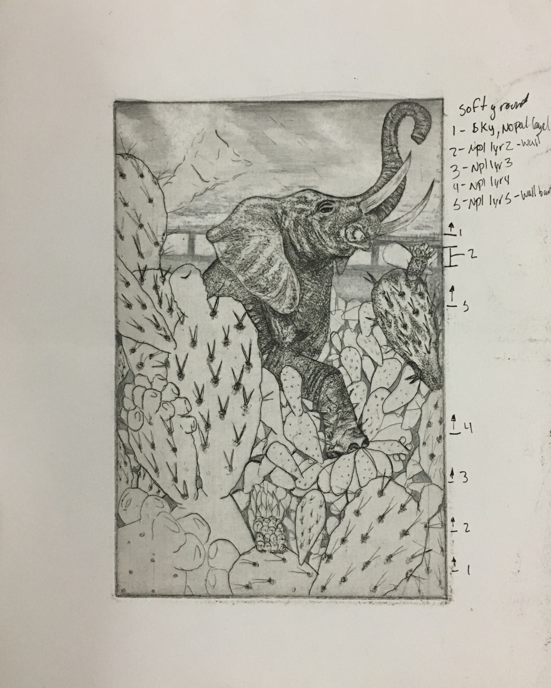
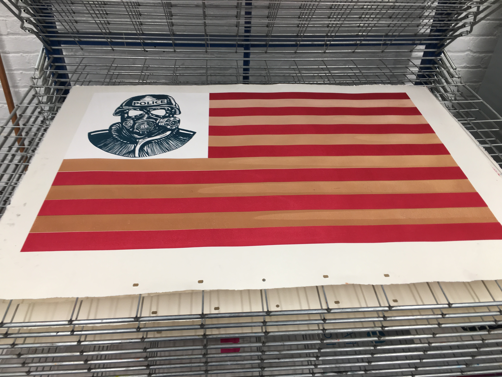
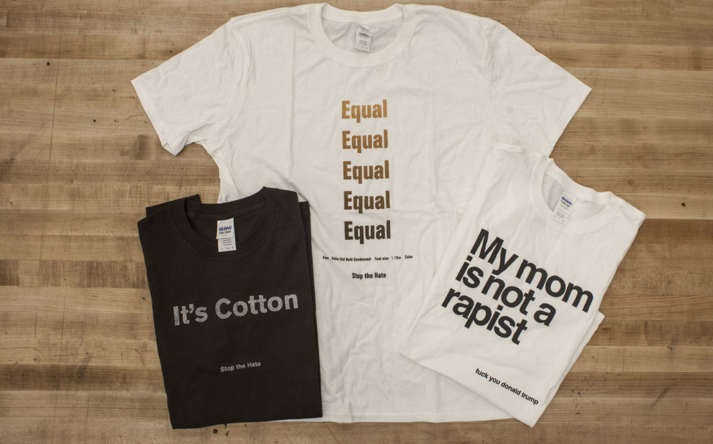

.jpg)
The white t-shirt simply reads, "My mom is not a rapist." Spaced below in smaller, black lowercase letters, "fuck you donald trump." The shirt is a direct response to President Donald Trump's slew of insults to Mexicans, such as calling them drug dealers, criminals, killers, and rapists.
"The last person you would expect to be a rapist is a mother, right? [I'm] just making [Trump's] claims meaningless," said Alfonso Calixtro, 20, the third-year illustration and printmaking student at Parsons who created this statement t-shirt. He's wearing it himself one afternoon in the wood and metal shop on the second floor of 66 Fifth Ave.
A Mexican-American himself, Calixtro focuses most of his artwork on his own experiences of multiculturalism, as well as being the son of two Mexican immigrants.
Running much of his campaign on what many would call the degradation of other cultures and his own xenophobia, Trump has always made his stance on immigrants and Mexicans clear: from his impending plan to build a wall on the United States border, and "force" our southern neighbors to foot the bill, to his not-so-secret desire to his plan to expedite the deportation of non-citizens using local police officers as enforcers.
"My work has been political and has been about immigrant rights and immigrant struggles since I was in high school," Calixtro said behind his taupe-framed eyeglasses. "But the recent election just amplified my intentions with my work. It's definitely pushing me to be more expressive and more open about who I am and what I think about what's going on at the moment."
Calixtro said he is working towards his art being a strong statement of his presence here in the U.S. and the current political state of the country, as well as making a mark on history with his t-shirts, printmaking and illustrations.
Calixtro grew up in Woodburn, Oregon-roughly 30 minutes outside of Portland-where people who identify as Hispanic or Latinx make up about 58% of the population. Described as mainly an immigrant community by Calixtro, being an Oregonian as well as Mexican is integral to his art, and despite living in Mexico for a few years, Calixtro considers Woodburn home. The state has a long history of political issues with people of color, such as their Sundown Laws that prohibited Black people, and often Latino and Asian people as well, from being in city limits by the time the sun had set. This was frequently enforced with threats or violence. Oregonians are proud people Calixtro said, so this is a history often not talked about. However, coming from a supportive, primarily Latino community where people were transparant about the state's dark past, Calixtro was able to find influence in being Oregonian as well as Mexican-American for his work.
"Most of my work is focused on my heritage and my identity as a Mexican-American, because I've always struggled to know what it means to be Mexican-American," Calixtro said, mentioning it's a hard thing to figure out as a young person. "So a lot of my work deals with trying to figure out what it means to be Mexican-American, and what are my roles in this country- in my country, and Mexico- my second country. Figuring out where I stand and what culture values to take from each."
Opening his sketchbook, Calixtro showed an illustration he is currently working on. Penciled on the page is an intricate drawing of an elephant, its large foot coming down on cacti. Calixtro said the cacti represents Mexicans and Mexican-Americans, the elephant representing the Republican party. He plans on taking the sketch and making it into a 6x9 etching. This momentary glimpse into Calixtro sketchbook is an exciting one. Sifting through pages filled with drawings and ideas, Calixtro's current projects make it clear the kind of artist he is- a political artist and activist, all titles that some might try and reject.
"[Calixtro's] work is incredibly dedicated, highly personal and politicized," said Annie Jim, 21, a third-year illustration student at Parsons. "It embodies his love for his family, for his Mexican-American identity, his cultural background and his opposition toward political corruption, especially in regards to violation of immigration rights- human rights- and white America's conceptual fear and oppression of black and brown people." Calixtro and Jim are in the same major at Parsons (Calixtro switching from communication design to illustration after his second-year), and met during their first-year in a watercolor workshop.
In a diverse sea of illustrators at Parsons (some doing anime, children's books, and toy designs as Calixtro said), it can be difficult to convey to classmates and fellow illustrators what it is precisely that one's art is supposed to communicate- especially when it is based primarily on experience. It's a daunting task presenting such personal work in front of others.
Michael Kirk, a Parsons professor since 1973 currently on sabbatical, who Calixtro referred to as more mentor than professor, understands the nature of Calixtro's body of artwork and the larger meaning it often takes on. Kirk taught an advanced silkscreening class that Calixtro said was focused on developing an artistic voice and the "making" process.
"Alfonso wants to make work that reflects on his cultural base and wants to use symbols and images that speak through his heritage," Kirk said. "He wants that cultural base to be front and center."
For Calixtro, the most frustrating thing about presenting art to his classmates and professors is the uncertainty of how they will react to it, and not knowing if they are going to empathize or not. "I'm exposing myself because it is personal, it is something that even has a stigma- being an immigrant in the times that we're living in," Calixtro said. "So just not knowing how people will react and not knowing what other people's political views are, that's the most frustrating thing."
Calixtro recounted a time in 2014 before attending Parsons that he was interviewed for The Oregonian, a daily newspaper in Portland, and the negative messages readers left in the comment section of the article. Calixtro said commenters had called him an anchor baby- a derogatory term for a child born to a non-citizen mother- and referred to his work as anchor baby art. Calixtro believes the comments have since been deleted.
Through it all, Calixtro manages to remain in a healthy and positive state of mind. After looking down for a few moments in what appeared to be pensive thought, Calixtro said he hoped, if anything, people who view his illustrations, etchings, t-shirts, and prints are better able to understand other people's lives. He said the issues he faces are not unique to just him, and wants people to understand them and find empathy in other's identity issues and multiculturalism.
Calixtro, however, understands it's not possible for everyone to "get it." Somehow he manages to be unbothered and continues making the kind of art he wants to be doing, like the black t-shirt that says, "It's Cotton," and in smaller writing underneath, "Stop the hate." The classic t-shirt that most people think of is the white Fruit of the Loom shirt made from cotton. In the recent spike of hate crimes under the Trump administration, Calixtro wanted to make a t-shirt that would demonstrate the idea that the tee might be black, but it is still made from cotton like any other white t-shirt. It's all the same.
And while perhaps most his classmates, professors, and hometown understands what Calixtro is going for in his work, the fact of the matter is, not everyone will. The existence of an artist, however, is arguably not to make everyone understand, but rather to get people to see and to think, even if just for a moment.
"I want [people who don't understand his political art] to know that it's alright," Calixtro said. "It's alright if you don't understand, and if you don't want to deal with it. It's their loss; dealing with someone else's problems and looking into someone else's life is very important, because empathy and knowing how other people live is how we create understanding. If you don't want to deal with the stuff that I'm dealing with, you're just making yourself more ignorant to a world view."
Photos by JULIA HIMMEL